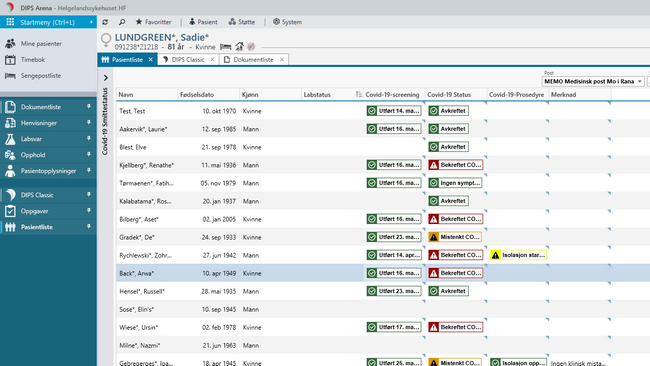
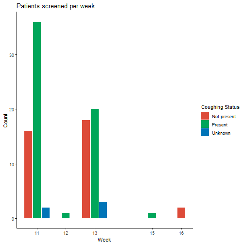
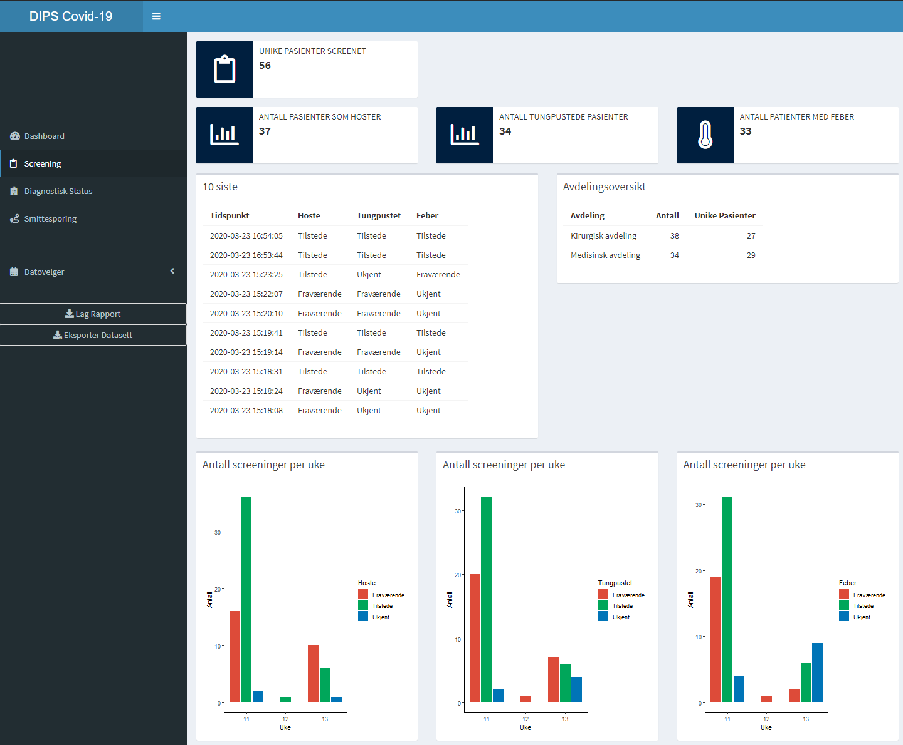

on
Analyzing covid-19 data in DIPS
A couple of weeks ago I published a post on how we enable data science at DIPS, which told the story on how we can get data from our openEHR server in the R programming language. To make things even more interesting, this post will show how we can get screening symptoms from covid-19 patients registered in our openEHR Server in DIPS Arena. With this data we can create reports with R Markdown, beautiful Shiny dashboards, and open up for researchers to explore and analyze the data in their own environment.
This spring at DIPS we have developed systems to register a patient’s covid-19-specific symptoms, if contact tracing has been started, and the results from the diagnostic tests. (News story in Norwegian here) These systems all built on openEHR which makes it easy for us to perform downstream analysis of the data in R, or any other programming language. Below is a screenshot from the application.

Lets see how simple it is for us to get all symptoms registered on patients in
our systems. We start with loading the openehR and other necessary packages.
library(openehR)
library(kableExtra)
library(dplyr)
library(lubridate)
library(ggplot2)
library(tidyr)
library(stringr)
Then we specify the AQL query to get the symptoms:
query =
"SELECT
c/context/start_time/value as DateTime,
o/data[at0001]/events[at0002]/data[at0003]/items[openEHR-EHR-CLUSTER.symptom_sign-cvid.v0 and name/value='Hoste']/items[at0.1]/value/value as Cough,
o/data[at0001]/events[at0002]/data[at0003]/items[openEHR-EHR-CLUSTER.symptom_sign-cvid.v0 and name/value='Kortpustet']/items[at0.1]/value/value as ShortnessOfBreath,
o/data[at0001]/events[at0002]/data[at0003]/items[openEHR-EHR-CLUSTER.symptom_sign-cvid.v0 and name/value='Feber']/items[at0.1]/value/value as Fever,
FROM
COMPOSITION c
CONTAINS observation o[openEHR-EHR-OBSERVATION.story.v1]
CONTAINS cluster cl[openEHR-EHR-CLUSTER.symptom_sign-cvid.v0]
ORDER BY
c/context/start_time/value DESC
"
In short, we are interested in if the patient is coughing, has shortness of
breath, or has a fever. In this blog post, the data is completely synthetic.
We can use the openehR package to execute the query. The url is just the
HTTP REST API endpoint of an openEHR server, e.g.
http://openehr-server/openehr.
data = openehR::query(url, query)
kable(head(data), format="markdown")
| DateTime | Cough | ShortnessOfBreath | Fever |
|---|---|---|---|
| 2020-04-14T23:11:48.8514407+02:00 | Fraværende | Fraværende | Fraværende |
| 2020-04-14T23:11:35.133184+02:00 | Fraværende | Fraværende | Fraværende |
| 2020-04-07T12:10:13.65364+02:00 | Tilstede | Fraværende | Fraværende |
| 2020-03-26T16:57:54.2842341+01:00 | Tilstede | Tilstede | Tilstede |
| 2020-03-26T16:32:38.9471856+01:00 | Tilstede | Tilstede | Ukjent |
| 2020-03-26T13:11:10.3743446+01:00 | Tilstede | Tilstede | Tilstede |
Since the data is in Norwegian, I’ll translate the recorded values:
data = data %>%
mutate_all(funs(str_replace(., "Tilstede", "Present"))) %>%
mutate_all(funs(str_replace(., "Ukjent", "Unknown"))) %>%
mutate_all(funs(str_replace(., "Fraværende", "Not present"))) %>%
mutate_at("DateTime", ymd_hms) %>%
arrange(DateTime)
kable(head(data), format="markdown")
| DateTime | Cough | ShortnessOfBreath | Fever |
|---|---|---|---|
| 2020-03-10 20:04:53 | Present | Present | Present |
| 2020-03-10 20:21:50 | Not present | Not present | Not present |
| 2020-03-10 20:22:20 | Present | Present | Present |
| 2020-03-10 21:04:54 | Not present | Not present | Not present |
| 2020-03-10 21:05:22 | Present | Present | Present |
| 2020-03-10 21:10:49 | Not present | Not present | Not present |
We can then plot the number of patients screened every week, grouping them on coughing status.
data %>%
mutate(week = isoweek(DateTime)) %>%
group_by(week, Cough) %>%
summarize(count = n()) %>%
ggplot(aes(x=week, y=count, fill=Cough)) +
geom_bar(stat='identity', position = position_dodge2(preserve = "single")) +
xlab("Week") +
ylab("Count") +
labs(title="Patients screened per week", fill="Coughing Status") +
theme_classic() +
scale_x_continuous(breaks=unique(isoweek(data$DateTime))) +
scale_fill_manual(values=c("#dd4b39","#00a65a","#0074B7"))

Further we could look at the covid-19 diagnostic statuses, maybe even drill down to what other types of diseases are registered on these patients. By using openEHR to record the symptoms and other clinical data, it becomes a simple task for data analysts to get hold of tidy analysis-ready structured datasets.
Bonus: Shiny Apps
With the above code we can easily develop Shiny Apps that bring together the plots and tables in a web app. Below is a screenshot of a prototype I developed over the course of a week. While the text labels are all in Norwegian (because our customers are Norwegian), the screenshot shows an example of how we can use R together with openEHR to develop specialized applications in almost little time. This is because the data registered by clinicians are structured, and we can access them through a standardized API.

What is extremely powerful here, is that we get data from the patient journal system through the openEHR REST API. With the openEHR REST API specification, any vendor to implement the REST API and share apps built on top of this API. While some patient journal systems lock away the data in proprietary formats and applications, the openEHR REST API makes the data easily accessible to the actual owners of the data.
If you have any questions or comments, please contact me at bfj@dips.no.